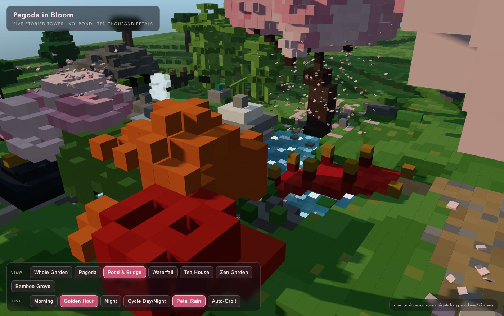
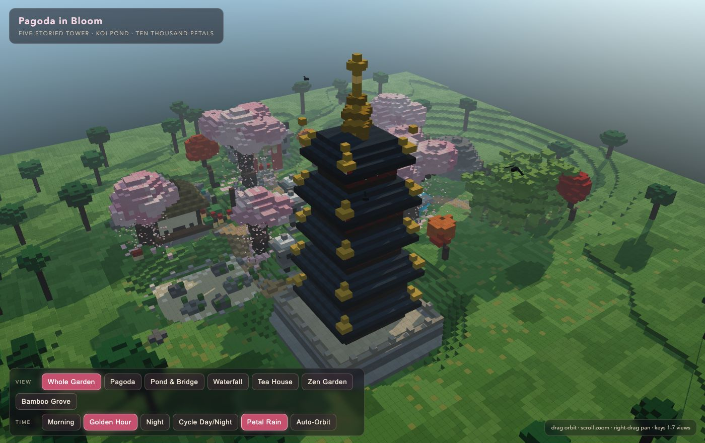
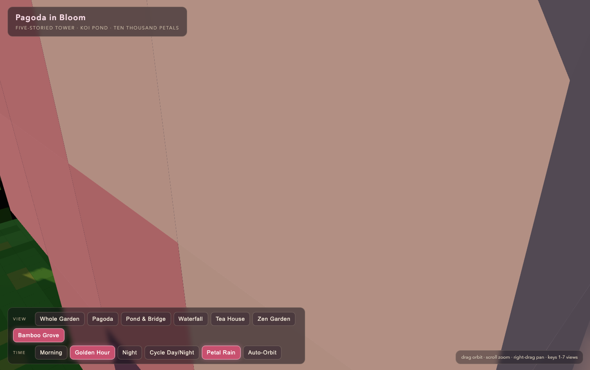
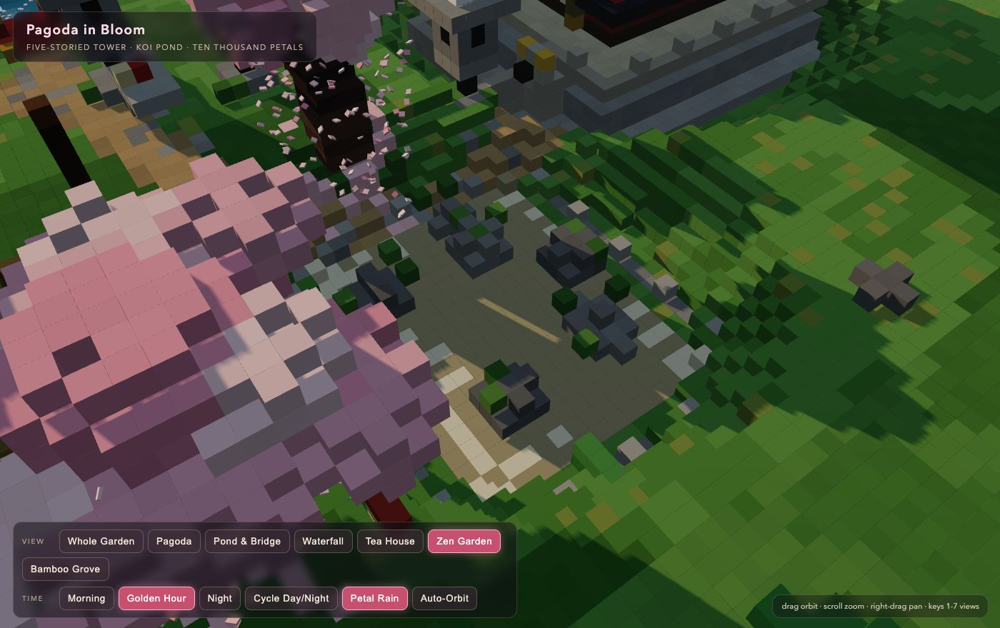
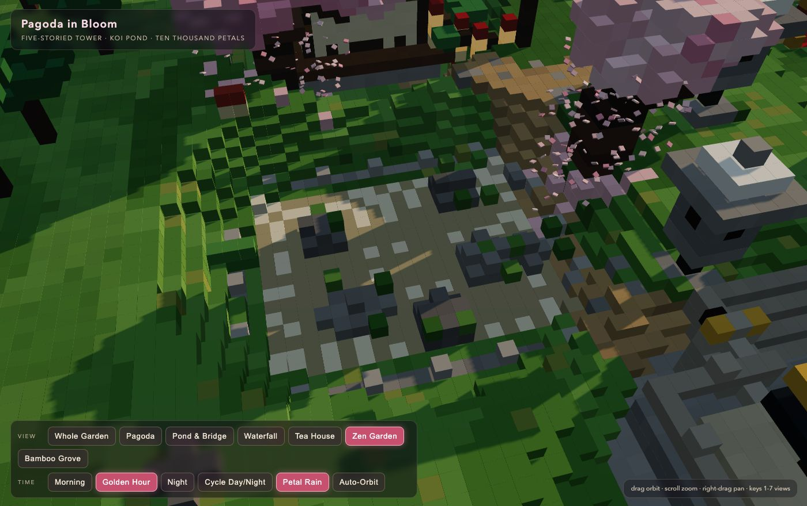
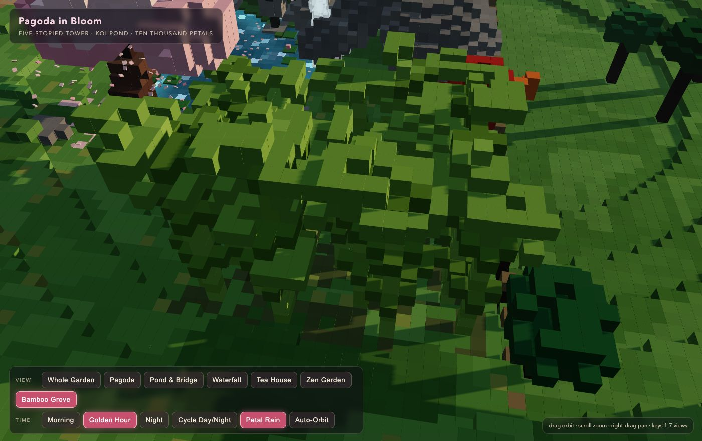

runs / 2026-10-26 / 144622-773000-strata-qwen3.8-fn-q4-319f19a5
63分・151呼出でボクセル塔婆庭園の単一HTMLを構築し全ビュー検証後に納品
qwen3.8-flash-next-unsloth-ud-q4_k_xl（Strata 0.1.48 / llama.cpp）が 3782 秒・151 呼び出し（主148／補助3）で単一 HTML のボクセル庭園シーン pagoda-garden.html（54697 バイト）を completed・exit 0 で納品した。最初の約 1276 秒をシーン本体の 3 回の全面書き直しに費やし、残りの約 2100 秒を headless ブラウザでのスクリーンショット検証（37 枚）とカメラ・細部の反復調整に充てた。最終メッセージでは各プリセットビューが目視検証済みと報告されている。
成果物
work/pagoda-garden.html（54,697 バイト）をそのまま同梱している。重いシーンもあるため、必要なときだけ起動する。
pagoda-garden.html
53 KB · 起動するまで読み込まない












全 37 枚から等間隔に 12 枚を選んでいる。logs/events.jsonl の画像ブロックを内容ハッシュで重複排除して時系列に並べた、制作中の検証用スクリーンショット。最終版とは限らない。
成果物の構成
| 要素 | 内容 |
|---|---|
| 五重塔 | 石壇・玉砂利・欄干、朱の柱とスリット窓のクリーム色の壁、開いた障子戸、反った金箔妻、しゃちほこ、九輪のソリンと光る宝珠、梵鐘、心柱の描写。 |
| 池と水生 | シェーダー水面（ voxel 波・奥行き勾配・水際泡・太陽のきらめき）、尾を振る鯉 4 匹、苔の島の石灯籠、蓮と蛙、甲羅干しの亀。 |
| 滝・橋・鳥居 | 苔むした崖からの滝と飛沫パーティクル、金冠柱の赤いアーチ橋、石段と飛び石、笠木反り・扁額・注連縄付きの鳥居。 |
| 茶屋 | 茅葺き屋根、木枠障子、格子窓、藍暖簾、縁側と飛び石、内部の灯り、卓と座布団、盆栽二対、蹲踞。 |
| 枯山水 | 三石を囲む砂紋、直線の櫛目、石縁、苔。 |
| 竹林と動植物 | 節と筍のある竹林、動作する鹿威し、赤い涎掛けの地蔵、狛犬対、猫の紙灯籠、柳・雲形 pine・紅葉、六本の桜（うち一本は池越しの枝垂れ）、水面に着地する花びら 1500 枚。 |
| 昼夜演出 | 一日サイクル切替、黄金時開始、日の出／日の入の空、黄昏時に点灯し瞬化する灯籠と窓、月のハロー、星 900、萤火虫、昼の鳥と池上のトンボ、流れる雲のボクセル。 |
| 操作系 | ドラッグ／スクロール／右ドラッグ／タッチの orbit-zoom-pan、カメラプリセット 7（ボタン・キー 1〜7）、時刻ボタン、petal-rain・自動軌道トグル、#pond 等の hash ディープリンク。 |
| 検証手段 | 各プリセットを headless Chrome で描画・目視し、水質・樹形・砂紋コントラスト・カメラ遮蔽・夜景亮度を全ビューが正しく読めるまで反復したと最終報告に記載。 |
モデルの最終メッセージから読み取った内容。コードの確認はしていない。
タイムライン
151 回の API 呼び出しを時間順に並べた。上段の帯の幅が各呼び出しの所要時間で、帯の間の空白がツールの実行時間。下段はその時点のコンテキスト長。細い帯は、エージェントが別に投げた補助リクエスト（画像判定など）。 upstream が usage を返さない場合は、events.jsonl の message_end から復元する。復元できない値は ? で示す。
最も長い 2 回の生成（#7 494 秒・#6 391 秒）で 885.5 秒、壁時計の 23.4%。出力トークンの内訳は usage が揃っていないため出さない。推論以外（ツール実行など）は約 415 秒（11%）。
フェーズ別の内訳
| フェーズ | 経過 | 所要 | 全体に占める割合 | 呼び出し | 出力 tok | 何をしたか |
|---|---|---|---|---|---|---|
| 事前調査と計画 | 0:00–6:26 | 386 秒 | 10.2% | 5 | 20,602 | 補助呼び出し後にワークスペースとネットワークを確認し、browser デバイス docs 参照と headless 対応ブラウザ探索を試みた。最後は todo で構築計画を立案した。 |
| シーン構築 | 6:26–27:42 | 1276 秒 | 33.7% | 3 | 78,544 | write を 3 回（391.3s／494.2s／390.3s）実行し、単一 HTML のボクセル塔婆庭園シーンを記述・書き直した。#8 の初回は path 欠落で失敗している。 |
| 初期検証と修正 | 27:42–30:24 | 162 秒 | 4.3% | 16 | 6,784 | 構文チェック、静的サーバー起動、headless スクリーンショットで初回描画を確認した。vox の NaN 座標ガード、box/shell・ellip/cyl/cone の引数个数バグを順に修正し、金色の夕景が正常描画された。 |
| ビュー反復調整 | 30:24–45:52 | 929 秒 | 24.6% | 54 | 26,664 | 地形の密度化、花びらの水面着地、草地のパッチ化、樹木比率、水面スパークル、hash ディープリンク連動を edit で反映した。プリセットビューのスクリーンショット撮影と再編集を複数往復した。 |
| 夜景と細部検証 | 45:52–60:27 | 874 秒 | 23.1% | 57 | ? | 補助判定 2 件を挟み、枯山水・滝・竹林・夜景ビューの構図と遮蔽を個別検証・修正した。砂紋のコントラストと法、月光と灯籠の光り方、夜の明るさを強調し、#129〜#130 で VIEWS オブジェクトの閉じ括弧破損を修復した。 |
| 最終確認と納品 | 60:27–63:01 | 154 秒 | 4.1% | 16 | 4,147 | マスタートビューの重複キー確認、池と橋を見せるカメラスイング、宝塔先端のクリップ解除を調整した。一時サーバーとキャプチャ成果物を掃除し、todo 完了後に最終レポートを出した。 |
フェーズの切れ目は、ログから読み取れる作業内容の変わり目（LLM による区切り）。所要時間は、そのフェーズの最初の呼び出しの開始から次のフェーズの最初の呼び出しの開始まで。
151 回の呼び出しを表で見る
| # | 種別 | フェーズ | 開始 | 所要 秒 | prompt | うち cache | 出力 | tok/s | HTTP | ツール |
|---|---|---|---|---|---|---|---|---|---|---|
| 1 | 補助 | 事前調査と計画 | 0:00 | 10.5 | 180 | 0 | 549 | 56.7 | 200 | — |
| 2 | 主ループ | 事前調査と計画 | 0:00 | 196.6 | 8,003 | 7,812 | 9,850 | 53.1 | 200 | bash + eval |
| 3 | 主ループ | 事前調査と計画 | 3:17 | 2.0 | 18,156 | 17,853 | 63 | 54.9 | 200 | read |
| 4 | 主ループ | 事前調査と計画 | 3:19 | 5.1 | 18,266 | 18,218 | 255 | 58.1 | 200 | bash |
| 5 | 主ループ | 事前調査と計画 | 3:24 | 181.6 | 18,556 | 18,521 | 9,885 | 54.6 | 200 | todo |
| 6 | 主ループ | シーン構築 | 6:26 | 391.3 | 28,646 | 28,441 | 25,343 | 64.9 | 200 | write |
| 7 | 主ループ | シーン構築 | 12:57 | 494.2 | 54,029 | 28,641 | 29,104 | 60.1 | 200 | write |
| 8 | 主ループ | シーン構築 | 21:12 | 390.3 | 83,274 | 54,024 | 24,097 | 63.6 | 200 | write |
| 9 | 主ループ | 初期検証と修正 | 27:42 | 8.6 | 107,414 | 107,373 | 416 | 52.8 | 200 | bash |
| 10 | 主ループ | 初期検証と修正 | 27:51 | 6.3 | 107,856 | 107,829 | 337 | 57.9 | 200 | bash |
| 11 | 主ループ | 初期検証と修正 | 27:57 | 18.2 | 108,223 | 108,193 | 944 | 53.2 | 200 | bash |
| 12 | 主ループ | 初期検証と修正 | 28:17 | 4.9 | 109,195 | 109,168 | 255 | 56.7 | 200 | bash |
| 13 | 主ループ | 初期検証と修正 | 28:27 | 3.2 | 110,851 | 109,451 | 73 | 51.2 | 200 | read |
| 14 | 主ループ | 初期検証と修正 | 28:30 | 5.7 | 112,371 | 110,924 | 182 | 52.5 | 200 | bash |
| 15 | 主ループ | 初期検証と修正 | 28:36 | 43.0 | 112,650 | 112,553 | 2,260 | 53.4 | 200 | edit |
| 16 | 主ループ | 初期検証と修正 | 29:19 | 2.4 | 114,952 | 114,909 | 79 | 47.3 | 200 | read |
| 17 | 主ループ | 初期検証と修正 | 29:21 | 6.0 | 116,099 | 115,031 | 221 | 51.3 | 200 | edit |
| 18 | 主ループ | 初期検証と修正 | 29:27 | 6.1 | 116,578 | 116,321 | 248 | 49.0 | 200 | edit |
| 19 | 主ループ | 初期検証と修正 | 29:33 | 3.2 | 116,965 | 116,573 | 102 | 54.0 | 200 | grep |
| 20 | 主ループ | 初期検証と修正 | 29:36 | 2.9 | 117,275 | 117,066 | 112 | 55.5 | 200 | edit |
| 21 | 主ループ | 初期検証と修正 | 29:39 | 9.5 | 117,540 | 117,386 | 497 | 57.5 | 200 | bash |
| 22 | 主ループ | 初期検証と修正 | 29:49 | 6.5 | 118,061 | 118,037 | 357 | 58.7 | 200 | bash |
| 23 | 主ループ | 初期検証と修正 | 29:56 | 11.1 | 122,263 | 118,418 | 494 | 55.2 | 200 | bash |
| 24 | 主ループ | 初期検証と修正 | 30:18 | 5.1 | 123,305 | 122,757 | 207 | 52.2 | 200 | todo + todo + read |
| 25 | 主ループ | ビュー反復調整 | 30:24 | 43.1 | 125,286 | 123,511 | 2,039 | 49.9 | 200 | read |
| 26 | 主ループ | ビュー反復調整 | 31:07 | 5.4 | 127,942 | 127,325 | 196 | 47.7 | 200 | read |
| 27 | 主ループ | ビュー反復調整 | 31:12 | 4.3 | 128,748 | 128,139 | 147 | 49.3 | 200 | read |
| 28 | 主ループ | ビュー反復調整 | 31:16 | 11.5 | 129,637 | 128,895 | 508 | 50.0 | 200 | edit |
| 29 | 主ループ | ビュー反復調整 | 31:28 | 4.9 | 130,225 | 130,146 | 230 | 54.3 | 200 | edit |
| 30 | 主ループ | ビュー反復調整 | 31:33 | 2.9 | 130,713 | 130,458 | 104 | 54.4 | 200 | grep |
| 31 | 主ループ | ビュー反復調整 | 31:36 | 9.4 | 131,182 | 130,817 | 443 | 53.5 | 200 | edit |
| 32 | 主ループ | ビュー反復調整 | 31:45 | 8.0 | 132,066 | 131,626 | 384 | 56.3 | 200 | bash |
| 33 | 主ループ | ビュー反復調整 | 32:53 | 11.2 | 132,567 | 132,451 | 491 | 47.4 | 200 | grep |
| 34 | 主ループ | ビュー反復調整 | 33:05 | 10.8 | 133,220 | 133,057 | 479 | 48.2 | 200 | edit |
| 35 | 主ループ | ビュー反復調整 | 33:15 | 3.9 | 133,896 | 133,699 | 143 | 48.4 | 200 | bash |
| 36 | 主ループ | ビュー反復調整 | 33:19 | 2.4 | 134,087 | 134,038 | 86 | 52.8 | 200 | write |
| 37 | 主ループ | ビュー反復調整 | 33:22 | 7.0 | 134,261 | 134,173 | 366 | 58.1 | 200 | bash |
| 38 | 主ループ | ビュー反復調整 | 34:29 | 3.3 | 134,754 | 134,626 | 113 | 46.2 | 200 | read |
| 39 | 主ループ | ビュー反復調整 | 34:32 | 44.9 | 136,143 | 134,868 | 2,164 | 50.6 | 200 | read |
| 40 | 主ループ | ビュー反復調整 | 35:17 | 7.6 | 138,788 | 138,307 | 296 | 45.8 | 200 | read |
| 41 | 主ループ | ビュー反復調整 | 35:25 | 6.1 | 140,256 | 139,085 | 220 | 51.0 | 200 | edit |
| 42 | 主ループ | ビュー反復調整 | 35:31 | 4.7 | 140,780 | 140,476 | 169 | 47.3 | 200 | read |
| 43 | 主ループ | ビュー反復調整 | 35:36 | 41.3 | 142,309 | 140,950 | 2,284 | 57.9 | 200 | edit |
| 44 | 主ループ | ビュー反復調整 | 36:17 | 4.6 | 145,513 | 144,594 | 150 | 48.5 | 200 | grep |
| 45 | 主ループ | ビュー反復調整 | 36:22 | 7.4 | 146,641 | 145,663 | 325 | 54.9 | 200 | edit |
| 46 | 主ループ | ビュー反復調整 | 36:29 | 4.1 | 147,877 | 146,965 | 120 | 46.1 | 200 | edit |
| 47 | 主ループ | ビュー反復調整 | 36:33 | 2.6 | 148,122 | 147,998 | 93 | 52.0 | 200 | read |
| 48 | 主ループ | ビュー反復調整 | 36:36 | 4.6 | 148,488 | 148,216 | 173 | 48.6 | 200 | edit |
| 49 | 主ループ | ビュー反復調整 | 36:40 | 5.5 | 148,830 | 148,662 | 219 | 47.8 | 200 | edit |
| 50 | 主ループ | ビュー反復調整 | 36:46 | 5.3 | 149,269 | 149,050 | 240 | 57.0 | 200 | bash |
| 51 | 主ループ | ビュー反復調整 | 36:51 | 8.7 | 149,563 | 149,509 | 429 | 55.2 | 200 | bash |
| 52 | 主ループ | ビュー反復調整 | 38:00 | 3.3 | 150,151 | 149,991 | 114 | 47.2 | 200 | read |
| 53 | 主ループ | ビュー反復調整 | 38:03 | 31.6 | 151,541 | 150,264 | 1,587 | 53.9 | 200 | edit |
| 54 | 主ループ | ビュー反復調整 | 38:35 | 3.5 | 153,517 | 153,128 | 112 | 46.2 | 200 | edit |
| 55 | 主ループ | ビュー反復調整 | 38:38 | 4.3 | 153,798 | 153,630 | 157 | 45.8 | 200 | read |
| 56 | 主ループ | ビュー反復調整 | 38:43 | 3.7 | 155,231 | 153,954 | 84 | 54.8 | 200 | read |
| 57 | 主ループ | ビュー反復調整 | 38:47 | 61.0 | 155,166 | 54,024 | 1,162 | 54.3 | 200 | read + read |
| 58 | 主ループ | ビュー反復調整 | 39:48 | 44.3 | 156,449 | 119,560 | 1,514 | 53.4 | 200 | edit |
| 59 | 主ループ | ビュー反復調整 | 40:32 | 11.9 | 158,278 | 157,964 | 551 | 50.9 | 200 | edit |
| 60 | 主ループ | ビュー反復調整 | 40:44 | 16.0 | 159,033 | 158,828 | 796 | 53.1 | 200 | edit |
| 61 | 主ループ | ビュー反復調整 | 41:00 | 7.1 | 160,121 | 159,830 | 298 | 50.5 | 200 | edit |
| 62 | 主ループ | ビュー反復調整 | 41:07 | 17.7 | 160,814 | 160,420 | 882 | 53.3 | 200 | edit |
| 63 | 主ループ | ビュー反復調整 | 41:25 | 3.2 | 161,877 | 161,697 | 101 | 44.7 | 200 | edit |
| 64 | 主ループ | ビュー反復調整 | 41:28 | 2.5 | 162,108 | 161,977 | 91 | 55.7 | 200 | grep |
| 65 | 主ループ | ビュー反復調整 | 41:31 | 3.0 | 162,322 | 162,200 | 113 | 50.8 | 200 | edit |
| 66 | 主ループ | ビュー反復調整 | 41:34 | 10.5 | 162,527 | 162,434 | 527 | 54.3 | 200 | bash |
| 67 | 主ループ | ビュー反復調整 | 42:44 | 2.9 | 163,222 | 163,053 | 95 | 48.9 | 200 | read |
| 68 | 主ループ | ビュー反復調整 | 42:48 | 51.8 | 163,346 | 119,560 | 1,704 | 51.6 | 200 | edit |
| 69 | 主ループ | ビュー反復調整 | 43:39 | 7.4 | 165,472 | 165,049 | 308 | 50.5 | 200 | grep |
| 70 | 主ループ | ビュー反復調整 | 43:47 | 6.8 | 166,532 | 165,779 | 291 | 53.5 | 200 | edit |
| 71 | 主ループ | ビュー反復調整 | 43:54 | 6.6 | 167,598 | 166,823 | 234 | 45.5 | 200 | edit |
| 72 | 主ループ | ビュー反復調整 | 44:00 | 2.7 | 168,036 | 167,833 | 91 | 54.3 | 200 | grep |
| 73 | 主ループ | ビュー反復調整 | 44:03 | 3.7 | 168,423 | 168,127 | 143 | 54.4 | 200 | edit |
| 74 | 主ループ | ビュー反復調整 | 44:07 | 5.0 | 168,840 | 168,565 | 183 | 47.5 | 200 | read |
| 75 | 主ループ | ビュー反復調整 | 44:12 | 43.2 | 169,052 | 119,560 | 1,207 | 54.7 | 200 | edit |
| 76 | 主ループ | ビュー反復調整 | 44:55 | 8.6 | 170,465 | 170,259 | 429 | 55.6 | 200 | bash |
| 77 | 主ループ | ビュー反復調整 | 45:04 | 2.9 | 170,986 | 170,894 | 100 | 46.6 | 200 | read |
| 78 | 主ループ | ビュー反復調整 | 45:07 | 45.3 | 171,115 | 119,560 | 1,179 | 50.4 | 200 | wait |
| 79 | 補助 | 夜景と細部検証 | 45:52 | 53.2 | 2,939 | 0 | 2,629 | 52.1 | 200 | — |
| 80 | 補助 | 夜景と細部検証 | 46:45 | 13.3 | 3,239 | 2,558 | 670 | 55.2 | 200 | — |
| 81 | 主ループ | 夜景と細部検証 | 47:06 | 5.4 | 172,479 | 172,294 | 202 | 47.0 | 200 | read |
| 82 | 主ループ | 夜景と細部検証 | 47:12 | 23.1 | 172,723 | 135,944 | 384 | 51.7 | 200 | read |
| 83 | 主ループ | 夜景と細部検証 | 47:35 | 19.2 | 173,136 | 135,944 | 155 | 49.1 | 200 | read |
| 84 | 主ループ | 夜景と細部検証 | 47:54 | 28.8 | 173,320 | 152,328 | 991 | 51.6 | 200 | edit |
| 85 | 主ループ | 夜景と細部検証 | 48:23 | 2.6 | 174,735 | 174,310 | 62 | 43.7 | 200 | read |
| 86 | 主ループ | 夜景と細部検証 | 48:26 | 36.8 | 174,826 | 152,328 | 1,355 | 50.9 | 200 | bash |
| 87 | 主ループ | 夜景と細部検証 | 49:22 | 6.4 | 176,666 | 176,180 | 241 | 46.5 | 200 | read |
| 88 | 主ループ | 夜景と細部検証 | 49:28 | 30.7 | 176,936 | 152,328 | 987 | 50.1 | 200 | edit |
| 89 | 主ループ | 夜景と細部検証 | 49:59 | 5.3 | 178,131 | 177,922 | 209 | 48.1 | 200 | read |
| 90 | 主ループ | 夜景と細部検証 | 50:04 | 25.5 | 178,362 | 152,328 | 677 | 51.3 | 200 | edit |
| 91 | 主ループ | 夜景と細部検証 | 50:30 | 3.0 | 179,193 | 179,040 | 106 | 51.3 | 200 | edit |
| 92 | 主ループ | 夜景と細部検証 | 50:33 | 9.0 | 179,447 | 179,301 | 444 | 54.6 | 200 | bash |
| 93 | 主ループ | 夜景と細部検証 | 50:42 | 2.2 | 179,983 | 179,890 | 68 | 48.8 | 200 | read |
| 94 | 主ループ | 夜景と細部検証 | 50:44 | 29.4 | 180,080 | 152,328 | 849 | 50.8 | 200 | read |
| 95 | 主ループ | 夜景と細部検証 | 51:14 | 18.8 | 180,958 | 152,328 | 312 | 52.0 | 200 | grep |
| 96 | 主ループ | 夜景と細部検証 | 51:33 | 8.0 | 182,046 | 181,269 | 352 | 53.8 | 200 | edit |
| 97 | 主ループ | 夜景と細部検証 | 51:41 | 2.8 | 183,122 | 182,398 | 69 | 48.9 | 200 | read |
| 98 | 主ループ | 夜景と細部検証 | 51:44 | 25.9 | 183,220 | 152,328 | 691 | 55.1 | 200 | edit |
| 99 | 主ループ | 夜景と細部検証 | 52:10 | 2.9 | 184,116 | 183,911 | 92 | 47.4 | 200 | read |
| 100 | 主ループ | 夜景と細部検証 | 52:13 | 21.4 | 184,237 | 168,712 | 771 | 54.2 | 200 | read |
| 101 | 主ループ | 夜景と細部検証 | 52:34 | 25.5 | 185,037 | 168,712 | 973 | 53.9 | 200 | edit |
| 102 | 主ループ | 夜景と細部検証 | 53:00 | 6.6 | 186,193 | 186,010 | 323 | 57.3 | 200 | bash |
| 103 | 主ループ | 夜景と細部検証 | 53:06 | 9.5 | 186,608 | 186,515 | 399 | 45.6 | 200 | read |
| 104 | 主ループ | 夜景と細部検証 | 53:16 | 6.0 | 188,191 | 186,603 | 185 | 47.9 | 200 | edit |
| 105 | 主ループ | 夜景と細部検証 | 53:22 | 3.4 | 188,516 | 188,375 | 120 | 48.8 | 200 | wait |
| 106 | 主ループ | 夜景と細部検証 | 53:27 | 25.8 | ? | ? | ? | ? | 200 | usage なし |
| 107 | 主ループ | 夜景と細部検証 | 53:53 | 2.6 | 188,780 | 188,636 | 67 | 44.7 | 200 | read |
| 108 | 主ループ | 夜景と細部検証 | 53:56 | 12.6 | 188,876 | 168,712 | 163 | 51.8 | 200 | read |
| 109 | 主ループ | 夜景と細部検証 | 54:09 | 17.0 | 189,068 | 168,712 | 362 | 48.2 | 200 | read |
| 110 | 主ループ | 夜景と細部検証 | 54:26 | 22.8 | 189,459 | 168,712 | 669 | 50.8 | 200 | edit |
| 111 | 主ループ | 夜景と細部検証 | 54:49 | 9.0 | 190,612 | 190,129 | 424 | 55.2 | 200 | bash |
| 112 | 主ループ | 夜景と細部検証 | 54:58 | 2.3 | 191,128 | 191,035 | 75 | 48.0 | 200 | read |
| 113 | 主ループ | 夜景と細部検証 | 55:00 | 32.8 | 191,232 | 168,712 | 1,299 | 57.4 | 200 | edit |
| 114 | 主ループ | 夜景と細部検証 | 55:33 | 2.1 | 192,746 | 192,532 | 59 | 54.8 | 200 | read |
| 115 | 主ループ | 夜景と細部検証 | 55:35 | 15.3 | 192,834 | 168,712 | 237 | 50.5 | 200 | read |
| 116 | 主ループ | 夜景と細部検証 | 55:51 | 27.2 | 193,100 | 168,712 | 843 | 51.2 | 200 | edit |
| 117 | 主ループ | 夜景と細部検証 | 56:18 | 9.8 | 194,411 | 193,943 | 461 | 53.8 | 200 | bash |
| 118 | 主ループ | 夜景と細部検証 | 56:28 | 4.1 | 194,964 | 194,871 | 150 | 44.6 | 200 | wait |
| 119 | 主ループ | 夜景と細部検証 | 56:53 | 16.5 | ? | ? | ? | ? | 200 | usage なし |
| 120 | 主ループ | 夜景と細部検証 | 57:09 | 3.1 | 195,248 | 195,114 | 95 | 47.0 | 200 | read |
| 121 | 主ループ | 夜景と細部検証 | 57:13 | 15.8 | 195,372 | 168,712 | 153 | 46.3 | 200 | read |
| 122 | 主ループ | 夜景と細部検証 | 57:29 | 17.7 | 195,554 | 168,712 | 265 | 51.6 | 200 | read |
| 123 | 主ループ | 夜景と細部検証 | 57:46 | 22.1 | 195,848 | 168,712 | 487 | 51.2 | 200 | edit |
| 124 | 主ループ | 夜景と細部検証 | 58:09 | 3.4 | 196,509 | 196,335 | 128 | 53.7 | 200 | edit |
| 125 | 主ループ | 夜景と細部検証 | 58:12 | 9.0 | 196,845 | 196,638 | 431 | 53.7 | 200 | bash |
| 126 | 主ループ | 夜景と細部検証 | 58:21 | 3.1 | 197,369 | 197,276 | 108 | 46.7 | 200 | wait |
| 127 | 主ループ | 夜景と細部検証 | 58:55 | 2.3 | 197,602 | 197,477 | 72 | 51.2 | 200 | read |
| 128 | 主ループ | 夜景と細部検証 | 58:57 | 22.7 | 197,703 | 168,712 | 492 | 51.4 | 200 | edit |
| 129 | 主ループ | 夜景と細部検証 | 59:20 | 4.7 | 198,362 | 198,194 | 179 | 48.3 | 200 | read |
| 130 | 主ループ | 夜景と細部検証 | 59:25 | 4.5 | 199,068 | 198,541 | 170 | 53.8 | 200 | edit |
| 131 | 主ループ | 夜景と細部検証 | 59:29 | 7.6 | 199,411 | 199,237 | 358 | 54.0 | 200 | bash |
| 132 | 主ループ | 夜景と細部検証 | 59:37 | 3.3 | 199,862 | 199,769 | 115 | 46.3 | 200 | read |
| 133 | 主ループ | 夜景と細部検証 | 59:40 | 24.8 | 200,006 | 168,712 | 571 | 52.1 | 200 | edit |
| 134 | 主ループ | 夜景と細部検証 | 60:05 | 3.0 | 200,788 | 200,576 | 102 | 51.1 | 200 | read |
| 135 | 主ループ | 夜景と細部検証 | 60:08 | 18.1 | 200,919 | 185,096 | 568 | 53.1 | 200 | bash |
| 136 | 主ループ | 最終確認と納品 | 60:27 | 6.8 | 201,580 | 201,486 | 288 | 48.0 | 200 | bash |
| 137 | 主ループ | 最終確認と納品 | 60:33 | 3.3 | 201,900 | 201,868 | 131 | 48.2 | 200 | wait |
| 138 | 主ループ | 最終確認と納品 | 60:41 | 2.1 | 202,145 | 202,031 | 65 | 50.8 | 200 | read |
| 139 | 主ループ | 最終確認と納品 | 60:43 | 24.6 | 202,239 | 185,096 | 815 | 51.6 | 200 | edit |
| 140 | 主ループ | 最終確認と納品 | 61:08 | 5.3 | 203,205 | 203,054 | 212 | 48.6 | 200 | grep |
| 141 | 主ループ | 最終確認と納品 | 61:14 | 3.8 | 203,573 | 203,417 | 155 | 53.6 | 200 | edit |
| 142 | 主ループ | 最終確認と納品 | 61:17 | 5.9 | 203,888 | 203,729 | 285 | 57.7 | 200 | bash |
| 143 | 主ループ | 最終確認と納品 | 61:23 | 3.2 | 204,266 | 204,173 | 113 | 48.7 | 200 | wait |
| 144 | 主ループ | 最終確認と納品 | 61:41 | 1.9 | 204,493 | 204,379 | 61 | 57.4 | 200 | read |
| 145 | 主ループ | 最終確認と納品 | 61:43 | 18.4 | 204,583 | 185,096 | 457 | 52.0 | 200 | edit |
| 146 | 主ループ | 最終確認と納品 | 62:01 | 6.2 | 205,320 | 205,039 | 291 | 56.9 | 200 | bash |
| 147 | 主ループ | 最終確認と納品 | 62:08 | 1.7 | 205,704 | 205,612 | 52 | 55.2 | 200 | wait |
| 148 | 主ループ | 最終確認と納品 | 62:27 | 2.1 | 205,870 | 205,756 | 72 | 57.2 | 200 | read |
| 149 | 主ループ | 最終確認と納品 | 62:29 | 15.6 | 205,971 | 185,096 | 318 | 56.3 | 200 | bash |
| 150 | 主ループ | 最終確認と納品 | 62:45 | 3.3 | 206,309 | 206,288 | 147 | 53.0 | 200 | todo + todo |
| 151 | 主ループ | 最終確認と納品 | 62:48 | 12.8 | 206,714 | 206,456 | 685 | 58.3 | 200 |
試行錯誤
ツールがエラー（isError）を返した結果の一覧。ツールは成功したのにモデル自身が内容を壊したケースは、ここには出ない。
エラーとして記録された 13 件
| 経過 | ツール | 起きたこと | 分類 |
|---|---|---|---|
| 3:17 | eval | eval で未存在の xd://browser を開こうとして ENOENT になった。Error: ENOENT: no such file or directory, open 'xd://browser' at async <anonymous> (js-cell-2e103377-2605-4b3f-84e7-8995610c4853.js:4:51) at async Xce (/$bunfs/root/chunks/cli-d4k1p37f.js:14:17) at as | API 誤用 |
| 3:19 | read | read でマウントされていない xd://browser を指定し No such tool が返った。No such tool: xd://browser. Mounted devices: ast_edit, debug, lsp. Active top-level tools are also dispatchable via xd://<tool>. | API 誤用 |
| 21:12 | write | write の必須パラメータ path が抜けてバリデーションに失敗した。Validation failed for tool "write": - path: path must be a string (was missing) Received arguments: { "content": "<!DOCTYPE html>\n<html lang=\"en\">\n<head>\n<meta charset=\"utf-8\">\n<meta name=\"vi | 引数不足 |
| 27:57 | bash | bash の service モードで受け付けない async/timeout を使い、ready.timeout を指示された。Service mode does not accept async or timeout; use ready.timeout for readiness. | API 誤用 |
| 29:19 | edit | 単独で発行すべき REM 指示に本文行を付けて拒否された。line 7: `REM` deletes the whole file and takes no body rows or line ops. Issue it alone under the header. | edit 誤用 |
| 31:28 | edit | PUT の range 末尾が直下 1 行の再掲のみで選択範囲の最終内容を満たさず拒否された。`PUT 209.=212:` rejected: the body ends by restating the 1 line(s) just below the range, but is too short to be the full final content of the selected range. Re-issue with the range covering exactly t | edit 誤用 |
| 36:33 | edit | 表示したことのない 1054 行目を根拠に edit を張り、内容不一致で拒否された。This edit anchors to lines 1054 of pagoda-garden.html that [pagoda-garden.html#F8E9] never displayed (it showed a partial range, a search hit, or a folded summary). Actual file content at those lines: | 未読行編集 |
| 41:00 | edit | 未確認の 538、861〜863 行を anchor にした edit が却下された。This edit anchors to lines 538, 861-863 of pagoda-garden.html that [pagoda-garden.html#8634] never displayed (it showed a partial range, a search hit, or a folded summary). Actual file content at thos | 未読行編集 |
| 41:28 | edit | 未確認の 559 行目を anchor にした edit が却下された。This edit anchors to lines 559 of pagoda-garden.html that [pagoda-garden.html#2298] never displayed (it showed a partial range, a search hit, or a folded summary). Actual file content at those lines: | 未読行編集 |
| 43:39 | edit | 未確認の複数行（363〜364、377、634、862）を anchor にした edit が却下された。This edit anchors to lines 363-364, 377, 634, 862 of pagoda-garden.html that [pagoda-garden.html#F8C3] never displayed (it showed a partial range, a search hit, or a folded summary). Actual file conte | 未読行編集 |
| 44:00 | edit | 未確認の 716〜717 行を anchor にした edit が却下された。This edit anchors to lines 716-717 of pagoda-garden.html that [pagoda-garden.html#7F51] never displayed (it showed a partial range, a search hit, or a folded summary). Actual file content at those lin | 未読行編集 |
| 50:30 | edit | 未確認の 876 行を anchor にした edit が却下された。This edit anchors to lines 876 of pagoda-garden.html that [pagoda-garden.html#83E5] never displayed (it showed a partial range, a search hit, or a folded summary). Actual file content at those lines: | 未読行編集 |
| 58:08 | edit | 未確認の 550 行を anchor にした edit が却下された。This edit anchors to lines 550 of pagoda-garden.html that [pagoda-garden.html#405E] never displayed (it showed a partial range, a search hit, or a folded summary). Actual file content at those lines: | 未読行編集 |
経過は、そのツールを呼んだターンの終了時刻。エラー本文は先頭 300 文字までで、パスや接続先は伏せてある。
気づいた点
計測データ（呼び出し一覧・エラー・最終メッセージ）だけから LLM が書いた読み取り。文中の数値は、上の KPI や表と照らして確認する。
書き直しが総時間の34%
#6〜#8 の write 3 回だけで 1275.8s（全 3782.0s の約 34%）を占め、各コールの出力は 25343／29104／24097 tok に達した。#7 と #8 が同じ「fixed builders でクリーン版に書き直し」という意図であることから、初稿は機能不全で全面再記述が 2 度必要だったと読み取れる。
後半は検証往復が支配
#13 の初回スクリーンショット以降、t=1662〜3782s の約 2120s（56%）が read・edit・bash・grep の往復で消費された。ツール内訳 read 48・edit 47・bash 29・grep 9・wait 7・スクリーンショット 37 枚がこれを裏付ける。
未読行編集が7回連続失敗
E7〜E13 はすべて「表示履歴のない行を anchor にした edit 拒否」で、ビュー調整フェーズ（#47〜#124）に集中している。モデルはそのたびに grep/read で確認後に再発行（#44→#45、#64→#65、#72→#73、#91、#124）して回復したが、#129〜#130 では VIEWS ブロックの閉じ括弧破損の修復が別途必要になっている。
キャッシュ欠落でprefill急増
通常 prefill は 1〜2s だが、#57 で cache=54024（直前 ctx の約 1/3）に落ち prefill=39.2s になった。#68（18.4s）・#75（20.6s）・#78（21.4s）以降も cache=119560/152328/168712 と不一致が続き、長時間の検証ループ中にプロンプトキャッシュが繰り返し退避していた。
トークン統計は不完全
summary の output_tokens が null で、#106・#119 は tap 経由で out/ctx を返さず（?）、usage_complete=false（149/151）である。したがって実行全体の出力トークン量は本データからは確定できない。ピークコンテキスト 206714 はウィンドウ 524288 の約 4 割に収まった。
入力と設定
Design and create a very creative, elaborate, and detailed voxel art scene of a pagoda in a beautiful garden with trees, including some cherry blossoms. Make the scene impressive and varied and use colorful voxels. Add as many details as possible to showcase your attention to them. Use whatever libraries to get this done but make sure I can paste it all into a single HTML file.
input/prompt.md の全文。SHA-256 は ceece4685b37…。
| omp の起動オプション | --print --mode json --thinking high --no-title --approval-mode yolo |
| upstream | （接続先は伏せている） |
| タイムアウト | 43,200 秒 |
config/00-omp.yml
setupVersion: 2 autolearn: enabled: false autoContinue: false